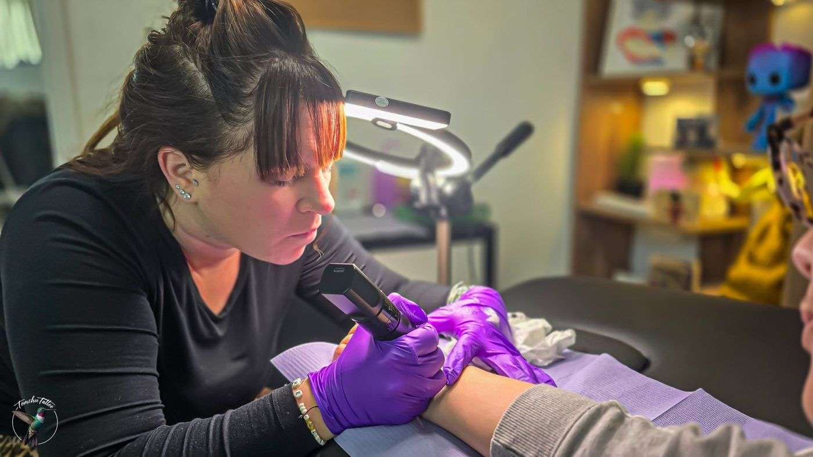
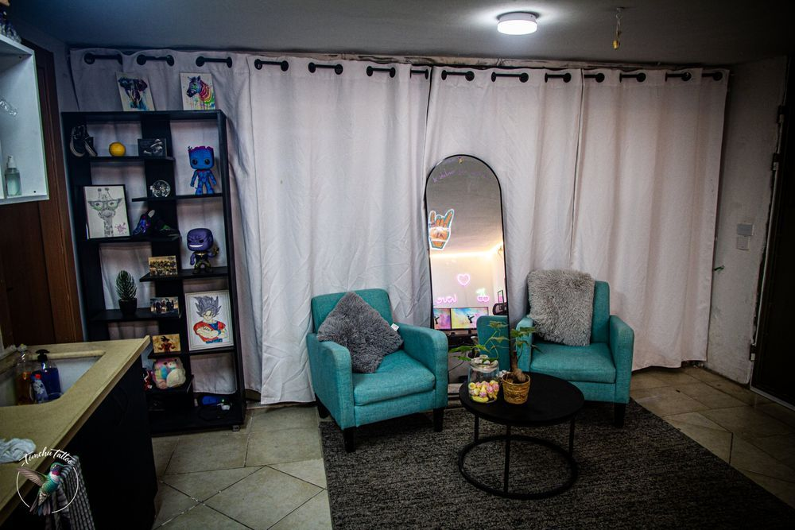
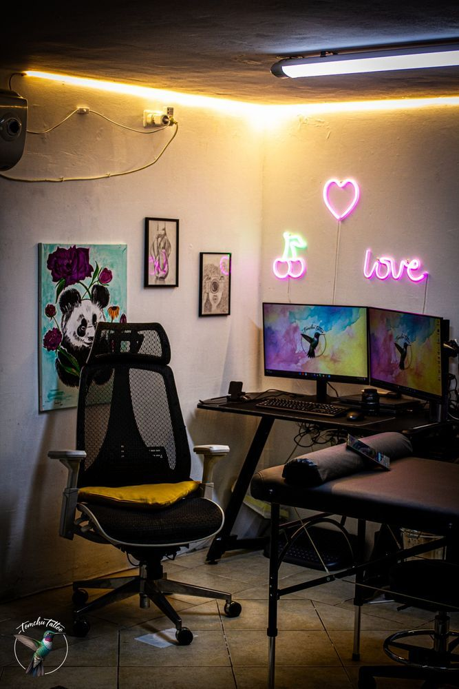
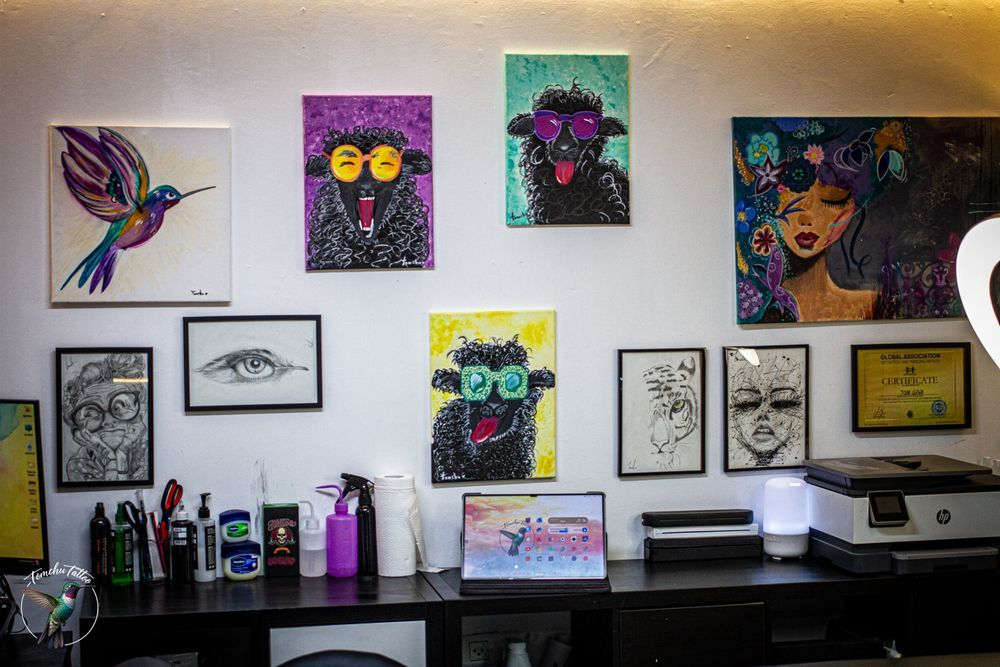
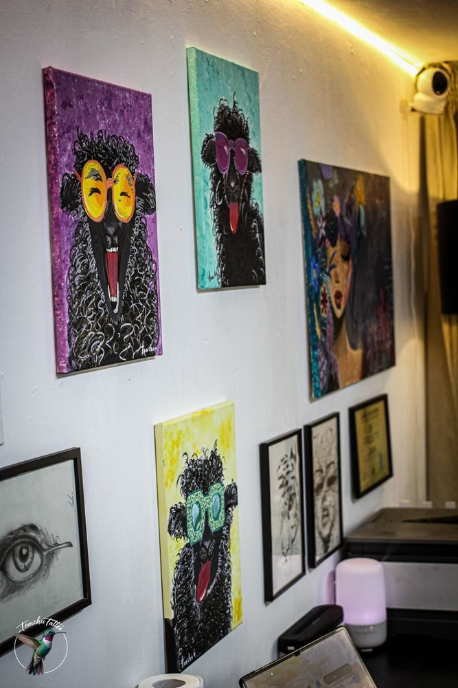

למה קעקועים?
קעקועים הם הרבה יותר מדיו על העור – הם סיפור חיים, זיכרון, ודרך לתת לנשמה לדבר. מאז הקעקוע הראשון שלי העולם הזה הפך לאהבה גדולה, וכל אחד מהקעקועים שלי מחזיק בתוכו רגע בזמן.

אני בת 38, נשואה לאייל ואמא לשלושה בנים מדהימים. התשוקה שלי לציור הובילה אותי ליצור על נייר, על נעליים ועל כל חפץ אפשרי. עבורי, האמנות היא דרך לביטוי עצמי ולבריחה לעולם שבו הכל אפשרי.
״אצלי אין חוקים – רק חלומות שמתגשמים.״
קעקועים הם הרבה יותר מדיו על העור – הם סיפור חיים, זיכרון, ודרך לתת לנשמה לדבר. מאז הקעקוע הראשון שלי העולם הזה הפך לאהבה גדולה, וכל אחד מהקעקועים שלי מחזיק בתוכו רגע בזמן.
לא צריך להגיע עם ציור מוכן. נשב יחד על כוס קפה, אקשיב לסיפור שלך, נבין איזה סגנון מרגש אותך – ואעצב סקיצה אישית שתהיה רק שלך.
קאברים (Cover Up) וקעקועים על צלקות. יש משהו מרפא בלקחת זיכרון ישן או צלקת ולהפוך אותם למשהו חדש ויפה שמחזיר את הביטחון העצמי.





מודה על היחס האישי, הסבלנות והאירוח בסטודיו – מרוצה מהתוצאה ומתכננת לחזור.
מספרת על סבלנות, הקשבה ותחושה בטוחה לאורך כל התהליך, ועל קעקוע שיצא בדיוק כמו שרצתה.
הרגישה נוח ובטוחה בקעקוע הראשון שלה, בזכות היחס האישי והסבלנות – ומתכוונת לחזור.
הרגישה שמקשיבים לה באמת; התוצאה מדויקת ויפה והאווירה נעימה.
מודה על קעקועים מושלמים, על ההקשבה, המקצועיות והעדינות – וכבר מתכננת את הבא.
נהנתה מהאווירה ומהעדינות של תום; הזמן עבר בקלות והיא מחכה למפגש הבא.
הגיע עם רעיון ישן שלא ידע איך לממש – הסבלנות והכישרון של תום הפכו אותו למציאות.
סטודיו חם ונעים, תום מקצועית ורגישה, והקעקוע יצא בדיוק כמו שרצתה. ממליצה בחום.
מתארת קבלה חמה, מקום אסתטי ונעים וקעקוע מושלם.
עשתה אצל תום שלושה קעקועים, ובעלה עשה אצלה את הראשון שלו; מדגישה מקצועיות, יצירתיות וקשב.
אני מזמינה אותך לבוא, לשבת איתי על כוס קפה, לדבר, להרגיש – ולהפוך יחד את הסיפור שלך ליצירת אמנות שתלווה אותך תמיד. תום